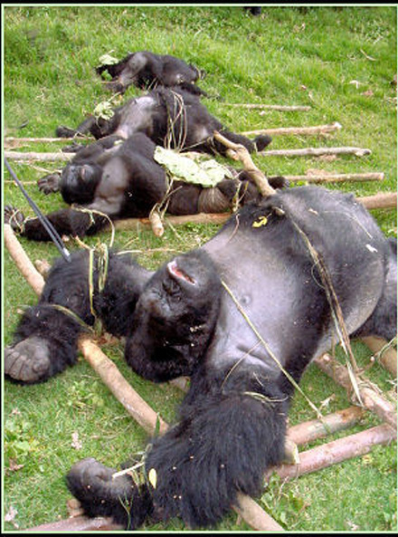

Ευρυτανικά Νέα | Τοπική εφημερίδα στο Καρπενήσι και την Ευρυτανία ...
Πάνε κάμποσες μέρες που άρχισε η κυνηγητική περίοδος, και άπαντες οι κάτοχοι όπλων πήραν τα βουνά και τα ρουμάνια προς αναζήτησιν θήρας. Αν και δεν είναι λίγες οι περιπτώσεις που βρίσκουν τη …θύρα κλειστή και επανέρχονται με το σακούλι άδειο και την καρδιά γεμάτη απογοήτευση, εντούτοις αυτό δεν πτοεί κανέναν και από νωρίς το πρωί του Σαββατοκύριακου, αλλά και των υπόλοιπων ημερών η μυρουδιά της μπαρούτης και ο ξερός ήχος της καραμπίνας γεμίζουν το αγουροξυπνημένο δάσος.
Για όποιον δεν κυνηγάει, το σπορ φαντάζει απάνθρωπο και δίχως νόημα. Για όποιον κυνηγάει είναι από τα ευγενέστερα. Φυσικά κανείς δεν δικαιούται να καταφέρεται με μανία εναντίον των κυνηγών, παρά μόνο αν είναι χορτοφάγος. Διαφορετικά, είτε κοτόπουλο σφάξεις, είτε μοσχάρι σκοτώσεις, είτε μπεκάτσα κυνηγήσεις, το ίδιο και το αυτό είναι…
Όλος ο δρόμος που πάει προς Στένωμα, την Κυριακή το πρωί, ήταν κατειλημμένος από κυνηγούς που είχαν πάρει τα βουνά, ψάχνοντας για το περιπόθητο θήραμα. Διαμαρτύρονται λοιπόν οι κυνηγοί για την έλλειψη θηραμάτων, αλληλοβρίζονται γιατί δεν τηρούνται οι κανόνες του κυνηγετικού σαβουάρ βιβρ. Πώς είναι δυνατόν όμως, όταν συνωστίζονται δέκα και δεκαπέντε άνθρωποι σε μια απόσταση 3 - 4 χιλιομέτρων να γίνουν σεβαστά τα δικαιώματα του άλλου; Είναι δυνατόν να δεις να περνάει μπροστά σου ο λαγός και να μην του ρίξεις, έστω κι αν τον έχει καταπόδι το σκυλί του άλλου; Αυτά γινόταν τότε που οι κυνηγοί είχαν συναίσθηση της θέσης τους και γνωρίζονταν μεταξύ τους. Αυτό που γίνεται όμως στις μέρες μες κάθε άλλο παρά με σπορ μοιάζει. Ακούγεται πως μόνο οι κυνηγοί αγριογούρουνων τηρούν κάποιους στοιχειώδεις κανόνες σεβασμού των δικαιωμάτων των άλλων κυνηγών.
Δεν θα ήταν όμως καλύτερο αν για ένα διάστημα έμπαινε κάποιος φραγμός; Η Ελλάδα είναι υπόδικη στο Ευρωπαϊκό διακαστήριο γιατί επιτρέπει το κυνήγι και κατά το Φεβρουάριο πράγμα που ρητώς απαγορεύεται από τις ευρωπαϊκές οδηγίες.
Βρέθηκε πάντως μια τέλεια πατέντα - ακραιφνώς ελληνική: Το κυνήγι σταματάει τον Φεβρουάριο, αλλά για ορισμένα μόνο είδη: το εξής κανένα! Ορίζονται διαφορετικές ημερομηνίες λήξης της κυνηγετικής περιόδου για παραπλήσια είδη πουλιών. Αυτό πρακτικά σημαίνει ότι ένας κυνηγός, την ώρα που σηκώνει το όπλο του, θα πρέπει να μπορεί να ξεχωρίσει ότι το πουλί που σημαδεύει είναι Χουλιαρόπαπια και όχι Κυνηγόπαπια και να έχει στο μυαλό του, ότι εάν είναι Φεβρουάριος επιτρέπεται να χτυπήσει την πρώτη αλλά όχι τη δεύτερη.
Αλλά ακόμα και αν συνέβαιναν όλα αυτά, μόνο το γράμμα του νόμου θα τηρούνταν εφόσον ο βασικός λόγος ύπαρξης της νομοθεσίας δεν υπηρετείται: η νομοθεσία γίνεται για να προστατευθεί η αναπαραγωγή των πουλιών και άρα η συνέχεια του είδους. Κάτω από τους ήχους των πυροβολισμών όμως είναι σίγουρο ότι κανένα είδος δεν αναπαράγεται. Άλλωστε ποιος θα πληροφορήσει την κυνηγόπαπια ότι εφόσον είναι Φεβρουάριος τα σκάγια δεν προορίζονται γι' αυτήν;
Επειδή όμως τα πράγματα εδώ είναι αρκετά διαφορετικά, οι "άτυχοι" κυνηγοί του Σαββατοκύριακου έχουν εφεύρει μια διαφορετική μέθοδο: Δεν βρίσκουν θήραμα στο δάσος; Κανένα πρόβλημα. Κυνηγάνε μέσα στην πόλη! Το Καρπενήσι όπως ξέρουμε όλοι, είναι τσιμεντοποιημένο μόνο στις περιοχές γύρω από την πλατεία.
Στις παρυφές του, που δεν είναι δα και πολύ μακριά από το κέντρο, υπάρχουν σπίτια χωμένα μέσα στο πράσινο. Σπίτια που με την οικιστική τους λειτουργία πολλές φορές δίνουν τροφή και καταφύγιο σε αρκετά θηράματα, κυρίως πετούμενα.
Αυτό έχει ως συνέπεια κάποιες μέρες, να πάει κανείς να περπατήσει ας πούμε στη Μεσοχώρα και να νομίζει ότι βρίσκεται στα …ύψίπεδα του Γκολάν με τα αδέσποτα σκάγια να πέφτουν σε σκεπές και τσίγκους και να δημιουργούν την εντύπωση ότι βρέχει!
| |
4 σ χ ό λ ι α :
|
Δηλαδή...είναι να τη βλέπεις Βέγγος σ'αυτές τιςπεριπτώσεις...(απ'τη γνωστή ταινία του Βούλγαρη)...και ν'αποδείξειςτελικά πόσο ευχάριστο χόμπυ είναι το κυνήγι! ! ! ! |
|
Μάλλον αδερφέμου καλύτερα είναι να τη δείς fa.ca.do.go. (πήγαινε στο site, lost στηδισκογραφία, στίχοι, ζωή, fa.ca.do.go) |
|
έτσι αδερφέ μου!έγκυρη ενημέρωση!!!! |
νέο σχόλιο:
|
33 readers online
|